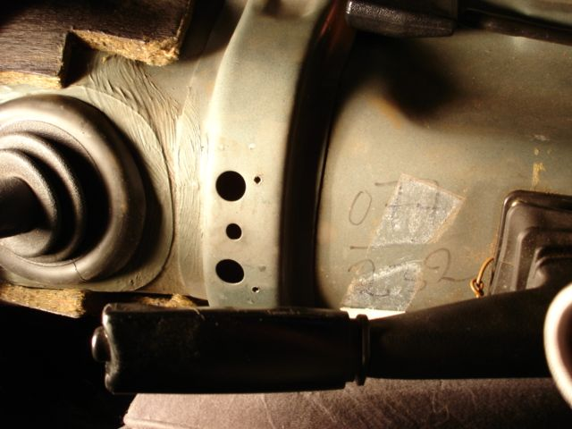
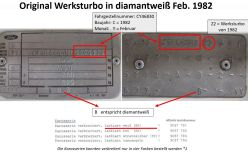

Die tatsächliche Produktionszahl des Ford Capri Werksturbo ist bis heute nicht eindeutig belegt. In vielen Veröffentlichungen wird von rund 200 Fahrzeugen gesprochen, eine offizielle Bestätigung von Ford existiert jedoch nicht. Im Werksturbo Register konnten bislang 122 unterschiedliche Fahrzeuge eindeutig dokumentiert werden. Diese Zahl wächst durch neue Erkenntnisse kontinuierlich weiter.

Nach heutigem Kenntnisstand wurden die Werksturbo-Fahrzeuge offiziell nicht fortlaufend nummeriert. Dennoch finden sich auf vielen Fahrzeugen Zahlenkombinationen auf dem Kardantunnel, die auf ein internes Kennzeichnungssystem hindeuten könnten. Besonders bei später produzierten Fahrzeugen treten diese Nummern regelmäßig auf. Welche Bedeutung sie tatsächlich haben, ist bislang nicht abschließend geklärt.
Hier am Beispiel: 077 - 232
Ein weiteres gefundenes Beispiel wäre 091 - 246

Der Ford Capri Werksturbo wurde ab Werk in vier bekannten Lackfarben ausgeliefert. In der Szene gibt es darüber hinaus Hinweise, dass mindestens ein Fahrzeug auch in Grau ausgeliefert worden sein könnte. Hier findest Du eine Übersicht aller bekannten Farben sowie deren Zuordnung anhand der Farbplaketten. Zur Vervollständigung der Dokumentation fehlen derzeit noch Fotos eines roten und eines grünen Werksturbo. Wenn Du solche Aufnahmen besitzt, würde ich mich sehr freuen, wenn Du sie für das Register zur Verfügung stellen würdest.

Der Motorcode PYN ist in Fahrtrichtung links vorne oberhalb der Motorseriennummer eingeschlagen. Bei Werksauslieferung entsprach die Motornummer der Fahrgestellnummer.
Nach meinen bisherigen Informationen soll der ehemalige Schweizer Formel-1-Rennfahrer Marc Surer einmal einen roten Ford Capri Werksturbo besessen haben.
Wo befindet sich dieses Fahrzeug heute? Ist der Capri noch erhalten und vielleicht sogar noch im Besitz eines Lesers oder eines Werksturbo-Sammlers?
Wer kennt die Geschichte dieses Fahrzeugs, hat Fotos, Unterlagen oder Informationen zu seiner früheren oder heutigen Identität? Auch kleinste Hinweise können bei der Suche nach dem Auto weiterhelfen.
Wenn Sie etwas über diesen roten Werksturbo wissen oder das Fahrzeug möglicherweise selbst besitzen, würde ich mich sehr über eine Nachricht freuen.
Hinweis: Die Information über den Besitz durch Marc Surer konnte von mir bislang noch nicht eindeutig belegt werden und soll mit diesem Aufruf weiter recherchiert werden.